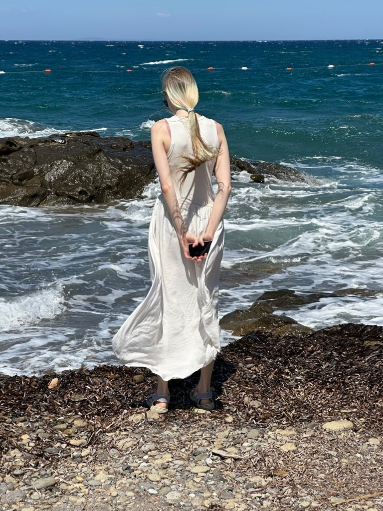

SpankPls — product design
App and graphics from early growth to today. Ownership of the core app plus additional products.
See on Behance →Open to junior product roles · Weimar / remote
I am Daria — a UI/UX designer who blends Bauhaus clarity, data literacy and neural-tool craft into interfaces people trust.

01 · About
Four years of UI/UX study at ITMO gave me programming, painting and design fundamentals. Two years of applied mathematics taught me to think in systems. Now the HCI master’s at Bauhaus Weimar teaches me to think in people.
I design in the open, test early, and write interfaces that explain themselves — no decoration without a job to do.
02 · Path
Tap any node — every step taught me something I still use in Figma today.
↓ try it — click the dots
Physics-mathematics lyceum with honours. English contests, volunteering, first events organised — the habit of leading with care.
03 · Work
Full case studies live on Behance. Each card below links out — no mockups invented for this page.
App and graphics from early growth to today. Ownership of the core app plus additional products.
See on Behance →Conference talk and published article at PPS ITMO 2025. A practical method for neural-assisted synthesis.
See on Behance →Two coded internships: Android planner in Kotlin, iOS Conway’s Game of Life in Swift. Design that ships.
See on Behance →04 · Neuro edge
For me AI is a research assistant, not a replacement: faster synthesis, broader exploration, stricter verification. Every AI-assisted insight is traced back to a human voice.
05 · Contact
Currently in Weimar, open to junior product roles, internships and freelance worldwide. Replies within two days.
Behance · your link here